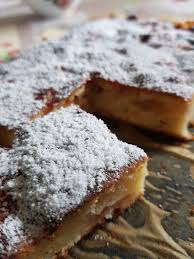

Sissejuhatus
See Salme Masso retseptil põhinev plaadikook on üks Nami-Nami Pille igapäevasemaid õunakooke. Lihtne teha, odav ja alati maitsev. Sama kooki võib teha ka rabarbriga, aga siis suurenda veidi suhkrukogust. Vahendid küpsetamiseks ning ilusaks serveerimiseks leiate kauplusest Apelsin.

| Koostisosad | Kogus |
|---|---|
| Nisujahu | 4 dl |
| Suhkur | 1.5 dl |
| Vanillisuhkur | 2 tl |
| Küpsetuspulber | 1.5 tl |
| Sool | Näpuotsaga |
| Või | 100 g |
| Muna | 2 tk |
| Õun | 500 g |
Valmistamine
- Pese õunad, eemalda südamikud ja lõika õunad väikesteks kuubikuteks (kui kasutad poeõunu, siis võid need esmalt koorida). Sega kuivained omavahel.
- Sulata või, pane tainakaussi.
- Lisa vähehaaval hapupiim, siis klopi juurde munad. Lisa kuivained ja õunakuubikud.
- Pane tainas ühtlase kihina võitatud 25x32 cm koogivormi (plaadikoogi jaoks tee tainast topeltkogus), puista peale demerara suhkrut ja soovi korral ka nt kaneeli.
- Küpseta 200kraadises ahjus helekollaseks (umbes 40-45 minutit). Veidi jahtunud koogile puista soovi korral tuhksuhkrut.
- Retsepti allikas on siin.